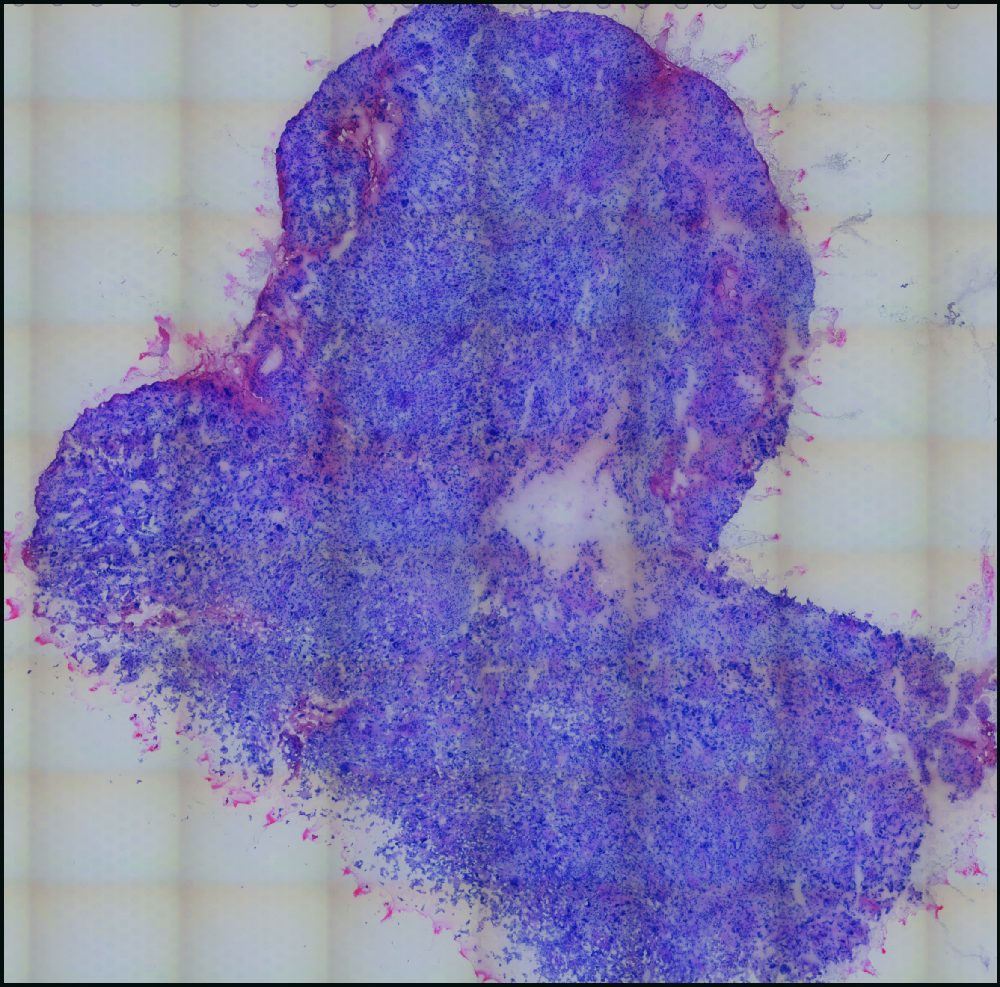
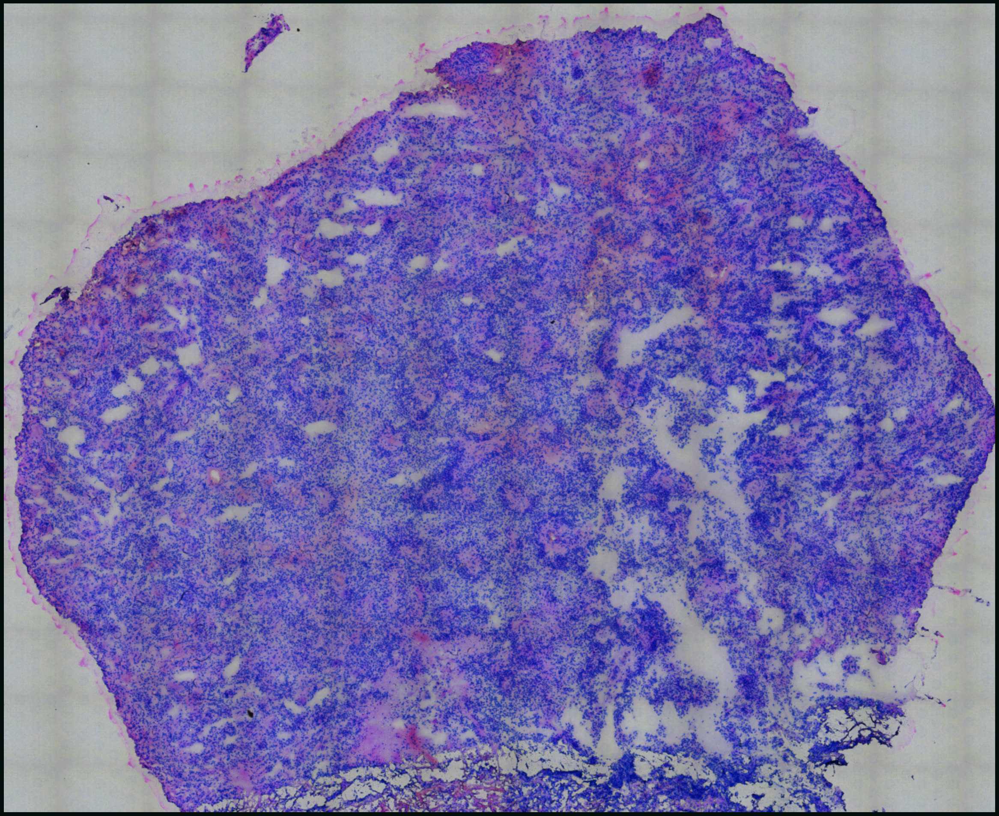
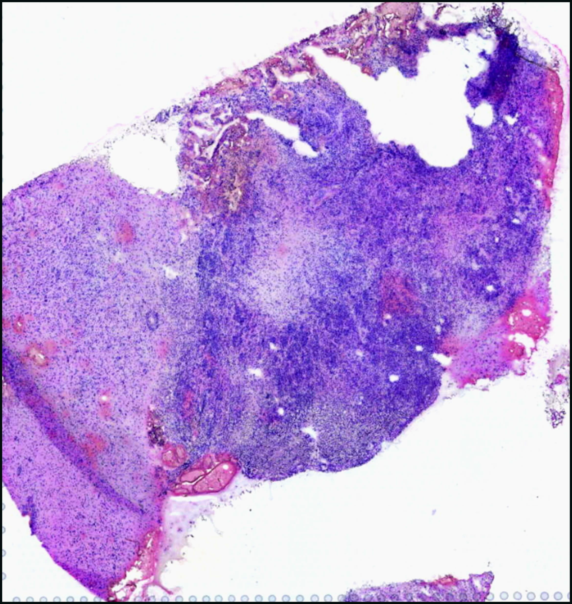
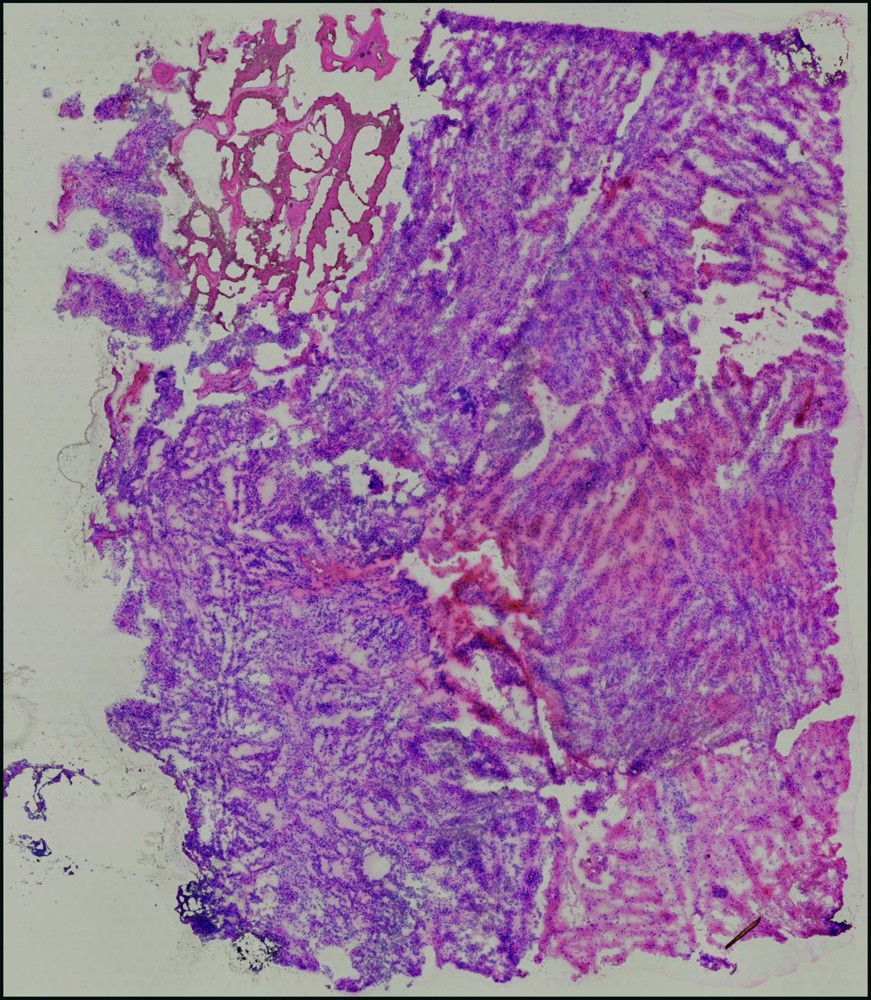
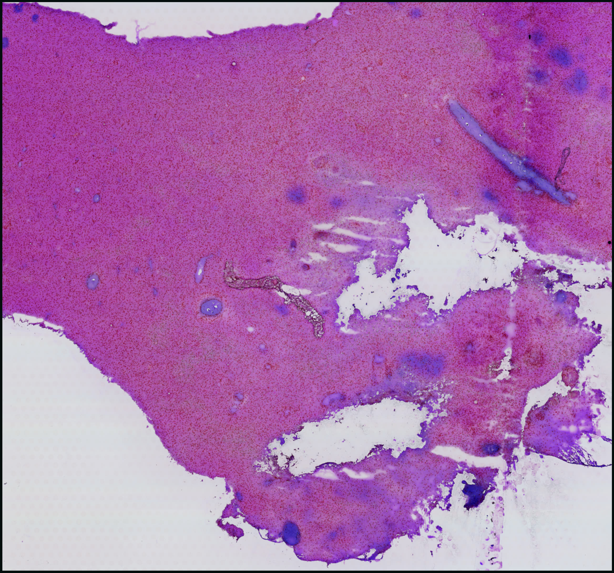
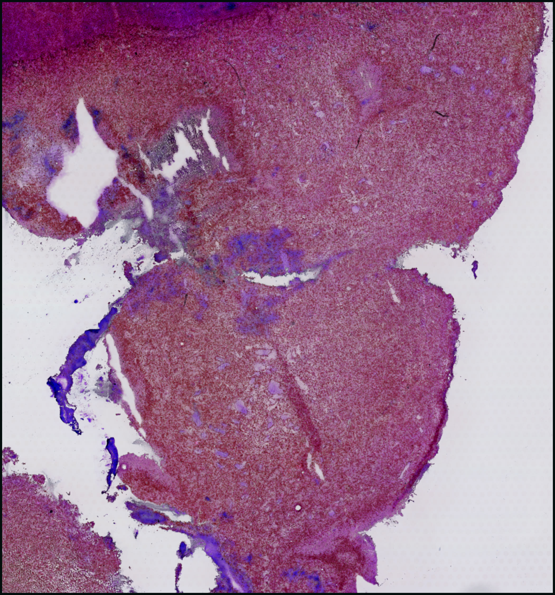
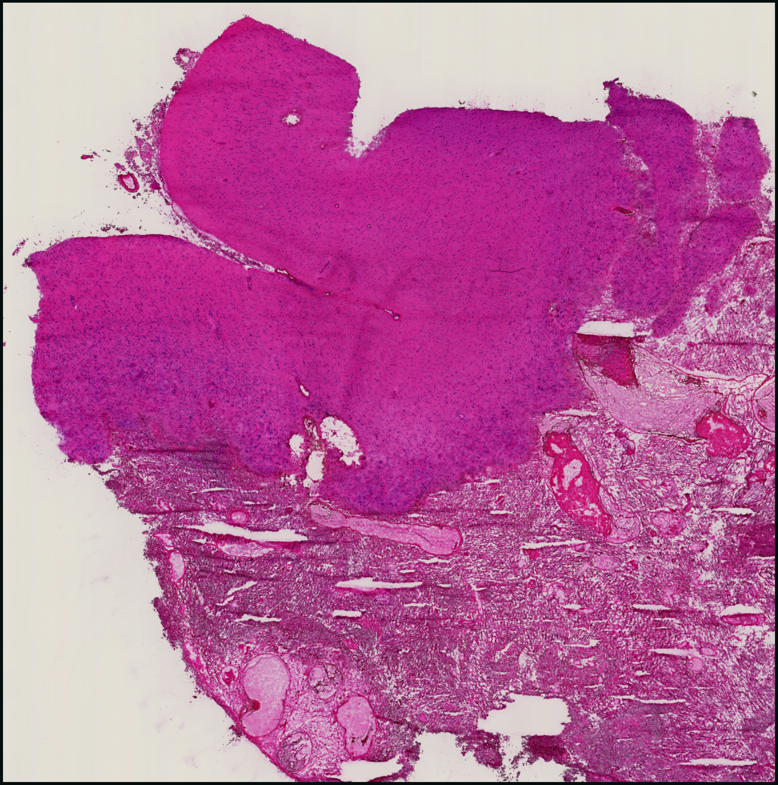
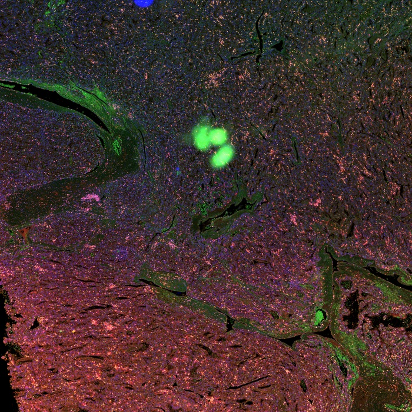
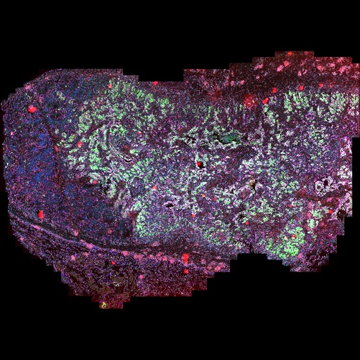
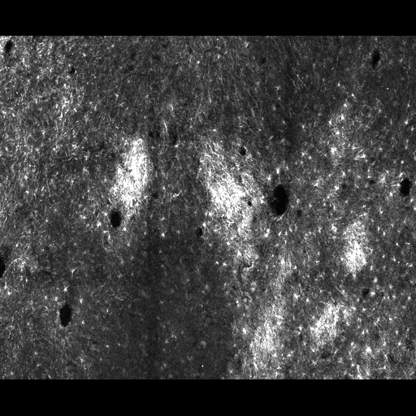

computational biology, accelerated.
Every core service your lab needs.
One AI-powered team.
The first analysis is on us.
Where our team has trained and collaborated


01 · BANKSY — A GBM USE CASE
Clustering that sees the tissue.
A big claim deserves a concrete opening: one method, one tumor section, watched doing its job.
A glioblastoma section. GFAP lights up reactive astrocytes and astrocyte-like tumor states alike — spot-by-spot clustering reads them as one blur.
BANKSY embeds every spot with its neighborhood — its own expression, the average of the ring of spots around it, and how that average changes around the ring. Place becomes part of identity.
Now they separate: putative astrocytes apart from NPC- and MES-like tumor states, each domain annotated by its own parallel subagent. Real GBM1 section, 4,764 spots; labels model-annotated.
why glioblastoma
GBM is the stress test. Several tumor states coexist in one section, they shade into each other, and the hardest split — reactive astrocytes versus astrocyte-like tumor states — shares the very marker you just watched (GFAP), so histology and single-gene panels both blur it. A pipeline that separates states here has earned the gentler tissues — and the public GBM record is deep enough (GSE194329, 10x, gbmspace.org) that every claim on this page can be re-run and checked.
agentic annotation of cell states
Once BANKSY resolves the domains, annotation fans out: one subagent per domain, running in parallel, each handed its domain’s top differential markers and constrained to a controlled vocabulary (AC-, MES-, NPC-, OPC-like plus the brain tumor microenvironment). The labels that snapped in above are those calls — model-annotated, flagged as such on every figure, never presented as ground truth.
02 · FROM SEARCH TO PORTAL
One query, eight sections, one portal.
The section above is one of eight — here is the paper trail that found them, screened them, and shipped them live.
62 series identified · GEO DataSets · accessed 2026-11-13








8 H&E sections · 3 sources · one coordinate frame

Fig. 1 | From search to portal — the GEO DataSets query (glioblastoma) AND (spatial transcriptomics) AND "Homo sapiens"[organism] AND gse[entry type] returned 62 human series (accessed 2026-11-13). The funnel shows our working subset, not a published systematic review: the sections this page actually processes — GSE194329 (Ren et al., Nat Commun 2023; 4 sections), the 10x Genomics Parent Visium GBM demonstration dataset (1 section), and the gbmspace.org atlas (de Jong et al., Nature 2026; 3 sections) — the remaining 61 GEO series were not individually adjudicated.
03 · GLIOBLASTOMA, LIVE
Five sections, one afternoon.
Five public glioma sections, dropped into the pipeline unmodified — each one came out the other side as a live portal.
- → four high-grade gliomas from Ren et al. 2023 (GSE194329; two IDH-wt GBM, two IDH-mut grade-4 astrocytomas, WHO CNS5) + one 10x Genomics GBM
- → BANKSY domains, putative cell states and marker maps, each with its own interactive Vitessce portal
- → three gbmspace.org atlas sections through the same stack, the paper's own annotations intact — one is breathing just below

HGG1 · Ren et al. 2023
GSE194329 · Visium · astrocytoma, IDH-mut, gr. 4
GBM2 · Ren et al. 2023
GSE194329 · Visium · GBM, IDH-wt, recurrent
GBM3 · Ren et al. 2023
GSE194329 · Visium · GBM, IDH-wt, primary
HGG4 · Ren et al. 2023
GSE194329 · Visium · astrocytoma, IDH-mut, gr. 4
GBM · 10x Genomics
Parent Visium · fresh frozen
Fig. 3 | Artemis Explore, running live in this page — AT15 glioblastoma section (de Jong et al., Nature 2026): pan and zoom the H&E, composite eight expression-derived marker channels, toggle 66 mapped cell states, and let the agent annotate from the run itself. Split view with the s key; open full screen above. Sample cards open the Ren et al. 2023 / 10x sections at full resolution; their state labels are model-annotated and not independently validated.
All of this is one assay on one disease — the demo we lead with, not the edge of the map.
THE PORTAL
One selection, every view.
Lasso a region on the tissue and the same cells light up in UMAP, the heatmap and the gene list — Vitessce linked views over a chunk-optimized zarr, in the browser, no install.

The portal as captured during the demo recording — GBM1 (4,764 spots) with UMAP + spatial linked views, cell sets, markers and the copilot rail.
Drop-in ingest
Any .h5ad or 10x Xenium folder — counts detected, coordinates verified, portal out.
Linked exploration
Spatial ⇄ UMAP ⇄ heatmap ⇄ gene list share one selection and one color encoding.
Ask the section
The copilot rail answers grounded questions — and can run with a local model through Ollama.
IN-BROWSER · NO INSTALL
Explore tissue data
An interactive visualizer with multi-channel marker overlays, cell states and paired H&E — right in the browser. Pan and zoom the histology, composite expression-derived marker channels, toggle the mapped cell states on and off.
8
marker channels, composited
66
mapped cell states
H&E
paired histology · pan + zoom
PUBLIC MULTIPLEXED TISSUE · BIOIMAGE ARCHIVE

ccRCC · Hoechst / MCM2 / CD3 / CD8 — composited from the study's OME-zarrBioImage Archive S-BIAD605 · Wölflein et al. · CC0
Lung adenocarcinoma · multiplex IF whole-slide imageBioImage Archive S-BIAD1237 · Um et al. · CC BY 4.0
Human thalamus · neuronal, vascular and glial markersBioImage Archive S-BIAD1641 · John et al. · CC BY 4.0Artemis moves across all of this — the artifact types already live elsewhere on this page:
paired H&E04 · WHAT WE DO
Eight cores. One embedded team.
That was the promise at the top of the page — and you have now watched one core run end-to-end. The rest work the same way: real pipeline, live portal, a report you can hand a reviewer.
Single-cell
Raw reads to annotated atlases · iPSC benchmarking
demo on request
CUT&Tag and chromatin
Peaks, tracks, differential binding
demo on request
Long-read sequencing
Isoforms, SVs and methylation
demo on request
Radiomics and imaging
Segmentation to outcome models
demo on request
Calcium imaging
Wave detection without hand scoring
demo on request
Clinical data and biostatistics
Cohorts, trials, survival models
demo on request
Custom apps: DNA Studio
Plasmid maps from SnapGene files
demo on request
Also bulk RNA-seq, variants, proteomics, metabolomics, cytometry and microbiome. Request a sample report →
05 · GENOMICS, LIVE
Not just spatial.
CUT&RUN, long reads, bulk — the same embedded team takes your assay from fastq to a browser you can hand a collaborator. The panel below is not a screenshot: it is a live igv.js genome browser streaming two public datasets into this page, opened on SOX2 — the stemness factor this site keeps meeting in tumor tissue — caught sitting on its own gene.
streaming reference + tracks from igv.org · GEO · GIAB…
Fig. 4 | Live genome browser (igv.js, hg38) at the SOX2 locus, chr3:181,695,000–181,730,000. Top track: SOX2 CUT&RUN coverage in NCI-H520 lung squamous carcinoma cells — GEO accession GSM8782600 (series GSE289046), RPKM-normalized; the ~800-RPKM peak over the gene body is the factor binding its own locus. Bottom track: PacBio HiFi Revio long-read alignments at 48× from the GIAB HG002 reference sample (NIST ftp-trace mirror, GRCh38) — single reads span tens of kilobases. Both are public datasets streamed live into the browser by HTTP range request; drag to pan, scroll to zoom.
06 · RADIOMICS & IMAGING
From scanner to statistics, browsable.
A longitudinal diffusion-MRI cohort browser we built for a preclinical neurodegeneration study: per-subject FA and fiber-orientation maps, full 3D volumes in the browser, and regional group statistics over 300 atlas regions — one interface from raw scans to effect sizes.
 artemis · dti-cohort-atlasscreen capture — 20s replay of the real tool
artemis · dti-cohort-atlasscreen capture — 20s replay of the real toolFig. 5 | The DTI cohort browser — 15 mice × 3 timepoints, registered to the Allen CCFv3 atlas (100 µm): FA mosaics and DEC fiber-orientation maps, with in-browser 3D volumes and per-region trajectories in the full tool. Preclinical research in progress, shown with group labels blinded; regional labels provisional.
07 · DEMOCRATIZING BIOINFORMATICS
Your computational biology core, reimagined.
The analysis isn’t a PDF you receive — it’s an instrument you hold. Below, 1,775 spots from a public GBM section breathe between the tissue they were cut from and the embedding that organizes them. Cell types keep their colors and their names the whole way, so you can watch morphology become biology — then take the dials yourself: drag the slider, switch the parameterization, color by SOX2 — the same stemness factor caught sitting on its own gene in the browser above.
loading embedding…
Fig. 6 | A living figure: the same 1,775 spots glide between tissue coordinates and four UMAP parameterizations computed offline from one shared neighbors graph (fixed seed) — cell-type labels ride their clusters through the fold. One UMAP is a choice, not a fact; here you hold the dials. GBM3, Ren et al. 2023 (GSE194329); every view computed, none curated.
08 · H&E × FOUNDATION MODELS
The slide already knows.
Every lab has H&E — it costs almost nothing and it's already in the archive; spatial profiling costs thousands per section, so almost nobody has it at scale. Pathology foundation models (UNI, Virchow, CONCH, Prov-GigaPath) are learning to read molecular state straight from morphology — and pairs like the one below are exactly the supervision that teaching requires: profiled tissue, not H&E-derived predictions.

virtual staining · early access
Pairs like the one above train the reverse direction too: compute the stain instead of performing it — H&E in, molecular overlays out (virtual staining; Rivenson et al., Nat. Biomed. Eng. 2019). We build it per lab: your slides, your measured spatial runs as the labels, your archive unlocked.
Request early access →09 · YOUR CO-SCIENTIST
Text us like your core.
A dedicated co-scientist rides inside every portal we ship — grounded in your clusters, markers and spatial statistics, answering the way a good core facility does, minus the three-week queue. Run it on a frontier cloud model, or flip the dropdown to a local open-source model through Ollama: no API keys, no cloud, no PHI exposure.
One co-scientist, every portal on this page — and the same rail ships with every assay we support: the live genome browser above is where CUT&RUN and long reads land.
Artemis · co-scientist
local · qwen3:8b · zero egress
Today 9:41 AM
Illustrative exchange — the prose is scripted, every number is real: output/TenX_GBM/report.md; Moran’s I computed with the portal’s live tool (backend/analysis/live.py) on the same section.
10 · THE STACK
Eight capabilities, one stack.
Everything above — the domains, the labels, the portals, the copilot — came out of these eight pieces. Welcome to the machine room. Try it with your .h5ad →
Fig. 8 | The pipeline as a live board — five public glioma datasets replayed through the real five-stage run (stage names from run_pipeline.py; counts from the shipped runs). Condensed replay, not a live cluster.
11 · THE STACK, CONNECTED
Speaks the tools you already trust.
The languages, databases, and viewers behind every demo on this page — flowing into one connected stack.
The stack
This is the stack that built every demo above. Hover any tool.
HOW AN ENGAGEMENT WORKS
1 · pilot
Send one dataset — Visium, Xenium, MERFISH or .h5ad — and get back a hosted live portal plus the marker report, free.
2 · scope
One call. We map your assays and questions to a concrete deliverable list.
3 · deliverables
A live portal, the written report, the figures — and the code that made all three.
4 · your data stays yours
Local-mode runs mean zero egress; cloud models are opt-in per project; deletion on request.
built by Caltech researchers
Your data has a story.
If your lab is sitting on spatial data and short on computational hands, the first analysis is on us — pick a public or in-house dataset and we'll turn it around as a live portal.